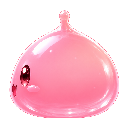
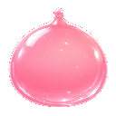
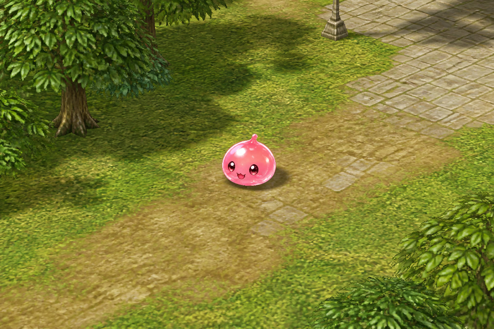

Drop-in for goro: copy data/sprite/monster/poring.spr and poring.act over the stock files (or into a GRF). RGBA frames, 40 actions (8 dirs × idle / walk / attack / hurt / death).
Packed cutouts
0 idle front1 idle ¾

2 idle side

3 idle back4 walk hop5 hurt6 die puddle
In-field preview

How the gloss reads on grass (art preview, not a live goro shot)